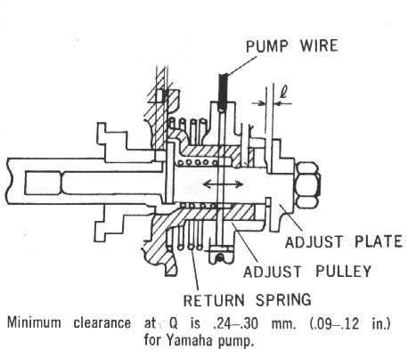
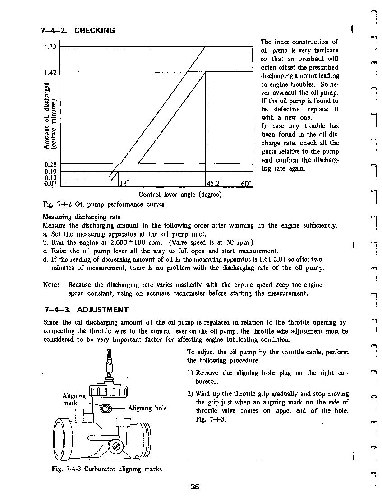

A pump that is working delivers a known amount of oil at a set engine speed and lever position. The test compares real delivery with the figure in the manual. It is a workshop job because it needs the engine to run at a set speed with the oil supply safe.
Safety
- Run the engine on pre-mix during the test so the engine is oiled even if the pump delivers nothing.
- Petrol is flammable. Work outdoors.
- Keep hands and loose clothing away from moving parts.
You need
- The manual with the test method and the output figure for your pump.
- A tachometer and a clock or timer.
Steps
- Read the manual's method. They differ by maker and model. One Kawasaki method runs the engine at about 2000 rpm with the pump control lever held wide open for three minutes, on 20 to 1 pre-mix. Use the values in your bike's manual, not this example.
- Bleed the pump first and check the cable setting.
- Follow the manual to measure what the pump delivers in the set time.
- Compare with the manual. Delivery well below the figure means a worn or faulty pump, a blocked line or a wrongly set cable.
- If the output is correct, the pump is not the problem.
Check your work
- Output within the manual's range.
- Pump arm moves from closed to full open as the throttle opens.
If it did not fix the problem
- Replace the pump or its parts. Some parts are sold only with the complete pump.
- Check the two-stroke oil pump and lines.